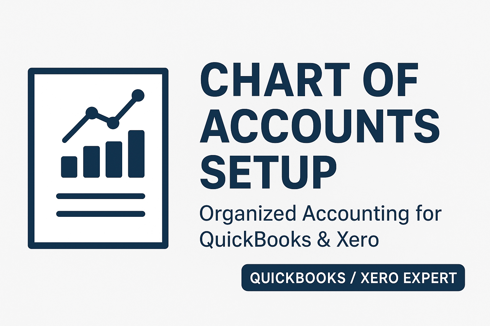
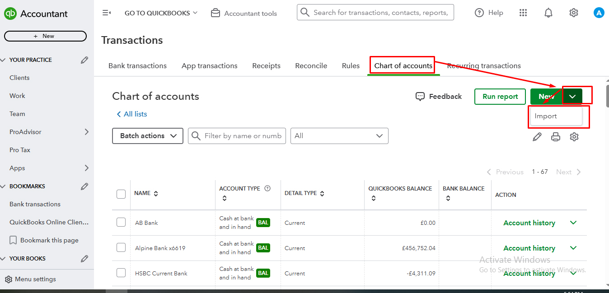
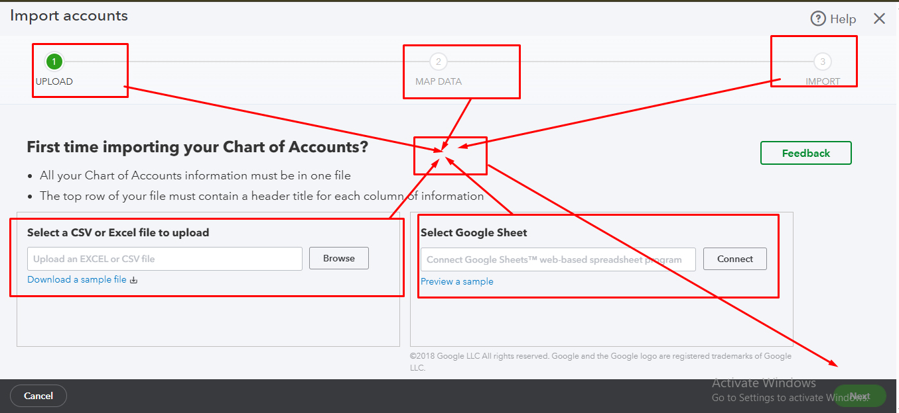
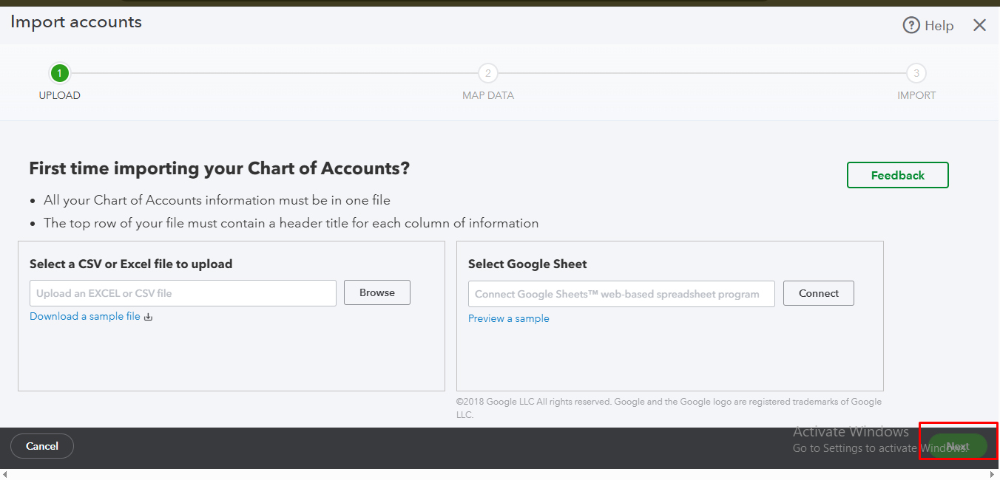
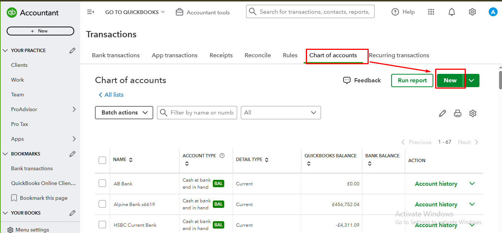
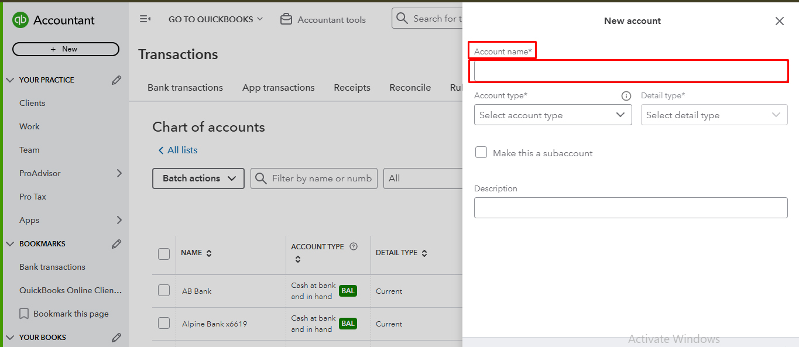
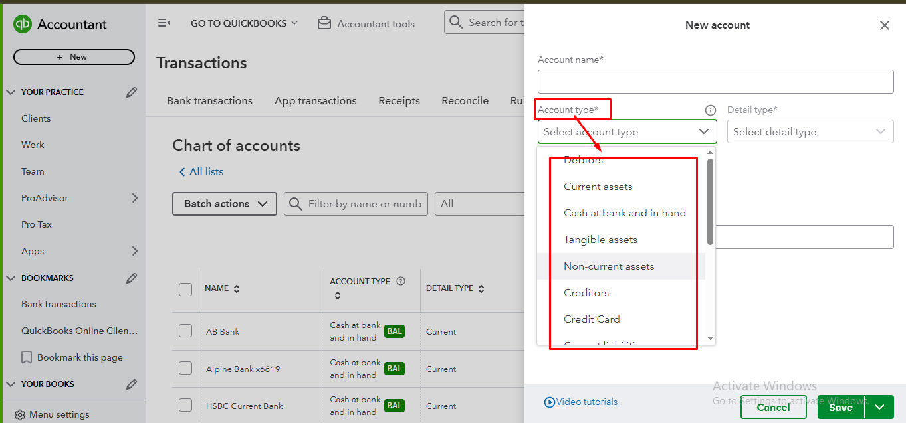
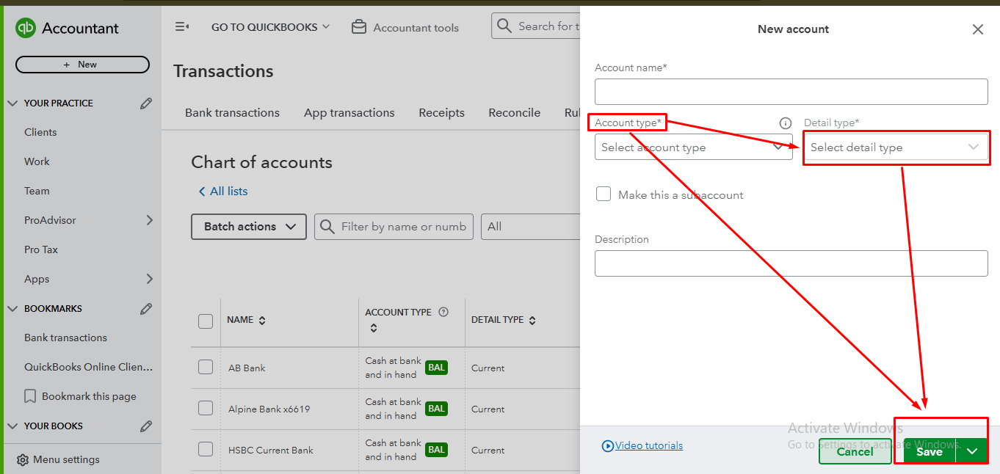
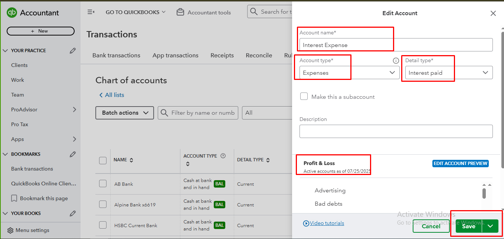
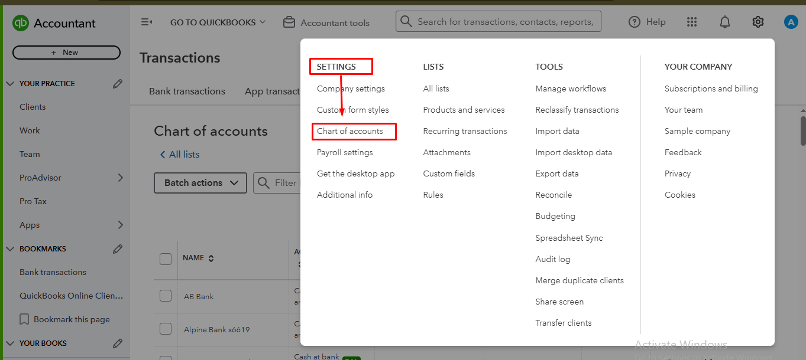

Back to QuickBooks Portfolio

QuickBooks Company Setup
Professional QuickBooks Online Chart of Accounts management including account creation, account types, detail types, import, account organization and settings.
Project Overview
This project demonstrates complete Chart of Accounts management in QuickBooks Online. It includes creating new accounts, selecting account types and detail types, importing Chart of Accounts, organizing account lists and managing account settings.
Skills Used
- ✔ Chart of Accounts Setup
- ✔ Create New Account
- ✔ Account Name Configuration
- ✔ Account Type Selection
- ✔ Detail Type Selection
- ✔ Import Chart of Accounts
- ✔ Account Organization
- ✔ Account Settings Management
Project Screenshots










×